Spatial and spatiotemporal diagnostics
Source:vignettes/spatial-spatiotemporal.Rmd
spatial-spatiotemporal.RmdWhy separate field components?
A spatiotemporal model can contain at least three distinct contributions:
- fixed effects, including measured covariates and temporal effects;
- a persistent spatial field, shared through time; and
- a spatiotemporal field, representing time-specific spatial departures.
Their sum describes the fitted linear predictor, but their influence
interpretations differ. A persistent spatial-field influence can reveal
a change in where observations were collected. A spatiotemporal-field
influence can also contain a genuine fitted annual spatial departure.
influ2 therefore keeps the fields separate instead of
silently combining them.
The examples below follow the packages’ own worked examples: the sdmTMB
introduction and the tinyVAST
vector-autoregressive vignette. They are deliberately small enough
to rebuild as package documentation.
sdmTMB
Data and mesh
The sdmTMB example uses its Pacific cod survey data from
Queen Charlotte Sound (Anderson et al. 2025). The response
is whether Pacific cod were encountered in a tow. Depth is included as a
quadratic effect, and year is the diagnostic focus.
library(influ2)
data("pcod", package = "sdmTMB")
data("qcs_grid", package = "sdmTMB")
ggplot(pcod, aes(X, Y, colour = density)) +
geom_point(size = 1.2) +
coord_fixed() +
scale_colour_viridis_c(trans = "sqrt") +
labs(x = "Easting (km)", y = "Northing (km)", colour = "Density")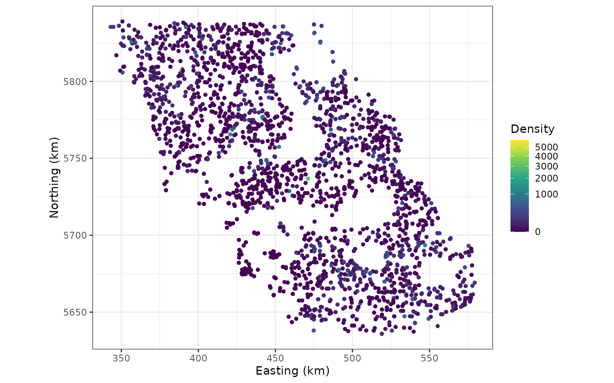
Observed Pacific cod survey tows, coloured by catch density.
The triangulated mesh approximates a continuous Matérn spatial field. The coarse cutoff is appropriate for a documentation example, rather than a recommendation for production analysis.
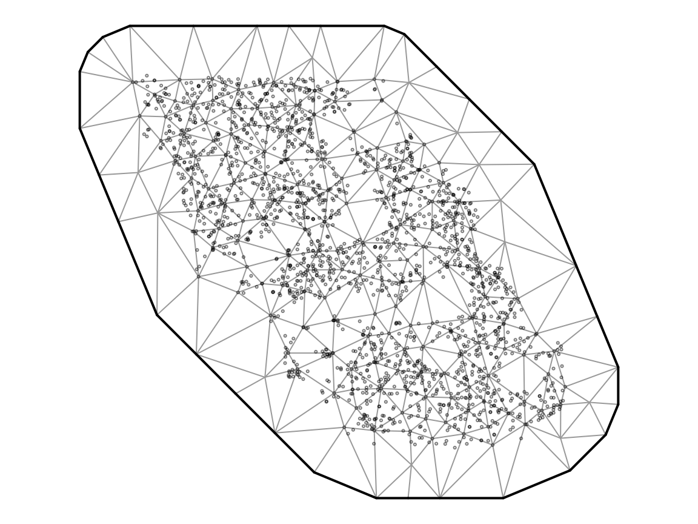
Triangulated mesh used for the Pacific cod spatiotemporal model.
Fit and diagnose
This is the package website’s binomial spatiotemporal model, with a persistent spatial field and independent year-specific spatiotemporal fields.
pcod_model <- sdmTMB::sdmTMB(
present ~ depth_scaled + depth_scaled2,
data = pcod,
mesh = pcod_mesh,
family = binomial(link = "logit"),
spatial = "on",
time = "year",
spatiotemporal = "IID",
silent = TRUE
)
pcod_diagnostic <- influ(
pcod_model,
focus = "year",
ndraws = 100,
seed = 11
)
summary(pcod_diagnostic)
#> Influence diagnostic summary
#> Backend: sdmTMB
#> Family: single binomial (logit)
#> Focus: year
#>
#> term component maximum_absolute_link_influence
#> depth_scaled conditional 0.5119533
#> spatiotemporal_field conditional:latent_fields 0.5064357
#> depth_scaled2 conditional 0.3191610
#> spatial_field conditional:latent_fields 0.2805937
#> level_at_maximum
#> 2003
#> 2013
#> 2004
#> 2003The common components plot shows the influence associated with changing depth coverage, persistent spatial structure, and year-specific spatial departures.
plot(
pcod_diagnostic,
type = "components",
term = c(
"depth_scaled", "depth_scaled2", "spatial_field",
"spatiotemporal_field"
)
)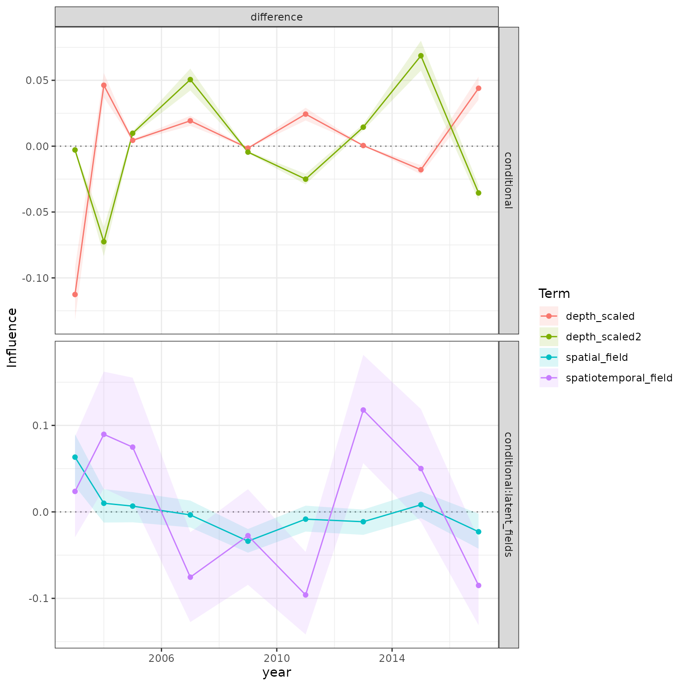
Fixed, spatial, and spatiotemporal influence components from the sdmTMB Pacific cod model.
Fitted field surfaces
sdmTMB::predict() exposes the persistent field as
omega_s, the spatiotemporal field as
epsilon_st, and their combined contribution as
est_rf. Mapping the same components that enter the
influence diagnostic is an important interpretation check.
mapping_grid <- do.call(
rbind,
lapply(c(2003L, 2017L), function(selected_year) {
transform(qcs_grid, year = selected_year)
})
)
field_predictions <- predict(pcod_model, newdata = mapping_grid)
field_surfaces <- tidyr::pivot_longer(
field_predictions,
cols = c(omega_s, epsilon_st, est_rf),
names_to = "component",
values_to = "link_contribution"
)
field_surfaces$component <- factor(
field_surfaces$component,
levels = c("omega_s", "epsilon_st", "est_rf"),
labels = c("Persistent spatial", "Spatiotemporal", "Combined fields")
)
ggplot(field_surfaces, aes(X, Y, fill = link_contribution)) +
geom_raster() +
coord_fixed() +
facet_grid(component ~ year) +
scale_fill_gradient2(
low = "#2166AC", mid = "white", high = "#B2182B", midpoint = 0
) +
labs(
x = "Easting (km)", y = "Northing (km)",
fill = "Link-scale\ncontribution"
)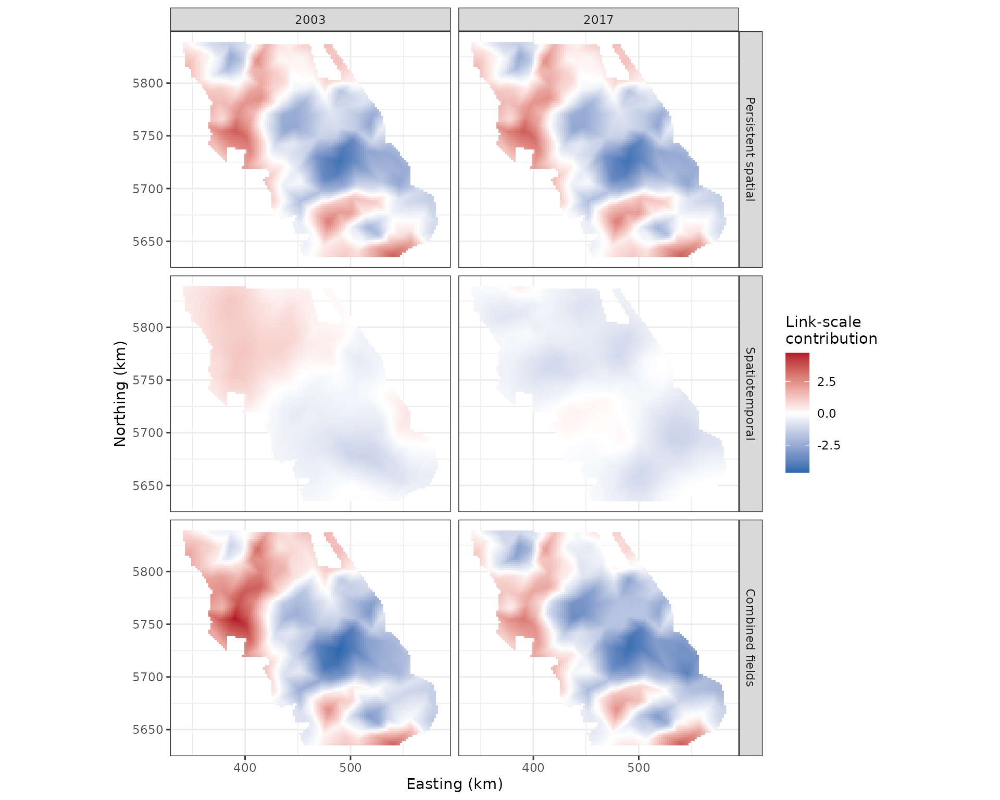
Persistent spatial field, year-specific spatiotemporal field, and their sum for two Pacific cod survey years.
Refitted year-effect steps
A separate step plot can show how the fitted year effects change when
spatial and spatiotemporal structure is added. Its models must all
contain an explicit fixed year term. The Pacific cod model above does
not contain one, so the following code first fits a version with
factor(year) while retaining its depth effects and field
structure. This additional sequence is shown without running the refits
during the vignette build.
pcod_year_model <- update(
pcod_model,
formula. = present ~ factor(year) + depth_scaled + depth_scaled2
)
pcod_steps <- influ_steps(
pcod_year_model,
year = "year",
component = "conditional",
refit = TRUE,
steps = list(
"Year + depth" = list(
formula = ~factor(year) + depth_scaled + depth_scaled2,
spatial = "off",
spatiotemporal = "off"
),
"Add spatial field" = list(
formula = ~factor(year) + depth_scaled + depth_scaled2,
spatial = "on",
spatiotemporal = "off"
),
"Add spatiotemporal field" = list(
formula = ~factor(year) + depth_scaled + depth_scaled2,
spatial = "on",
spatiotemporal = "IID"
)
),
ndraws = 100,
seed = 13
)
plot_step(pcod_steps)Every step retains the same observations, depth covariates, and year
term. The fitted year coefficients can change because the likelihood is
re-optimised with a different field structure. These are year-effect
contrasts from refitted models. They are not area-weighted abundance
indices, and the qcs_grid used for the maps is not
integrated to create this plot.
Joint delta step plots
A delta model can use different formulas and different annual
predictors in its two components, as described in the sdmTMB
delta-model guide. For example, the encounter component may have a
linear annual trend while the positive component has a factor year
effect. Set year to the common plotting variable and
year_term to the annual predictor in each formula. Each
predictor must be constant within a plotted year. The linear encounter
trend remains linear on its link scale: this interface does not turn it
into free annual coefficients.
This small simulated example illustrates the paired-formula interface. It does not fit spatial fields; explicit field stages can be specified as above.
set.seed(618)
n <- 360
delta_data <- data.frame(
year = factor(rep(2001:2004, each = n / 4)),
x = rnorm(n), X = runif(n), Y = runif(n), log_effort = runif(n, 0.2, 1.3)
)
delta_data$year_scaled <- (as.integer(delta_data$year) - 2.5) / 2
delta_data$response <- with(delta_data,
rbinom(n, 1, plogis(0.6 - 0.5 * year_scaled + 0.4 * x)) *
rlnorm(n, 0.5 + 0.2 * as.integer(year) + 0.5 * x + log_effort, 0.5)
)
delta_mesh <- sdmTMB::make_mesh(delta_data, c("X", "Y"), n_knots = 10)
delta_model <- sdmTMB::sdmTMB(
list(response ~ year_scaled + x, response ~ year + x),
data = delta_data, mesh = delta_mesh,
family = sdmTMB::delta_lognormal(), offset = "log_effort",
spatial = "off", spatiotemporal = "off"
)
delta_steps <- influ_steps(
delta_model, year = "year",
year_term = c(occurrence = "year_scaled", positive = "year"),
component = "unconditional_mean", refit = TRUE,
steps = list(
"Year terms" = list(formula = list(~year_scaled, ~year),
spatial = "off", spatiotemporal = "off"),
"Add covariate" = list(formula = delta_model$formula)
),
ndraws = 1000, seed = 13
)
plot_step(delta_steps)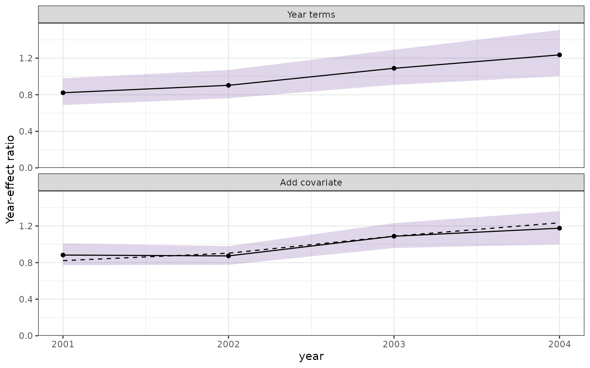
Combined annual-effect contrasts from a simulated delta-lognormal model with different year terms in its two components. The first stage fits only annual terms; the second reuses the full fit with the additional covariate. Effort offsets are preserved. Shading shows pointwise 95% intervals from the joint fixed-effect covariance, not uncertainty in the difference between models. These are not area-integrated indices.
Use component = "positive" for positive-component annual
ratios, or "occurrence" for encounter-probability
differences relative to the common fixed-effect reference.
"unconditional_mean" changes both annual terms together,
combining their joint covariance. Other covariates remain at each
model’s weighted fixed-effect reference; latent-field modes are not
added. With standard logit/log delta models, the positive log-link
effort offset cancels from these ratios, but remains in every refit’s
likelihood. This does not remove the separate restrictions on full
offset-dependent CDI plots. Paired refits currently support standard
delta-Gamma and delta-lognormal families. Save the calculated sequence:
plotting it again never refits models.
tinyVAST
Simulated spatiotemporal process
The tinyVAST example adapts the package’s official
univariate vector-autoregressive simulation (Thorson et al. 2025). It is smaller,
uses a Poisson response, and adds changing spatial coverage so that an
influence diagnostic has a sampling pattern to detect. The known process
contains a persistent spatial field and an AR(1) spatiotemporal
field.
set.seed(101)
n_x <- n_y <- 7
n_time <- 6
rho <- 0.45
spatial_sd <- 0.70
spatiotemporal_sd <- 0.50
spatial_correlation <- exp(
-0.5 * abs(outer(seq_len(n_x), seq_len(n_y), FUN = "-"))
)
spatial_covariance <- kronecker(spatial_correlation, spatial_correlation)
spatial_chol <- t(chol(
spatial_sd^2 * spatial_covariance + diag(1e-8, n_x * n_y)
))
spatiotemporal_chol <- t(chol(
spatiotemporal_sd^2 * spatial_covariance + diag(1e-8, n_x * n_y)
))
spatiotemporal_field <- t(replicate(
n_time,
as.numeric(spatiotemporal_chol %*% rnorm(n_x * n_y))
))
for (time_index in 2:n_time) {
spatiotemporal_field[time_index, ] <-
rho * spatiotemporal_field[time_index - 1, ] +
sqrt(1 - rho^2) * spatiotemporal_field[time_index, ]
}
spatial_field <- as.numeric(spatial_chol %*% rnorm(n_x * n_y))
linear_predictor <-
1 +
outer(seq(-0.15, 0.15, length.out = n_time), rep(1, n_x * n_y)) +
outer(rep(1, n_time), spatial_field) +
spatiotemporal_field
tiny_grid <- data.frame(
expand.grid(
time = seq_len(n_time),
x = seq_len(n_x),
ycoord = seq_len(n_y)
),
true_linear_predictor = as.vector(linear_predictor)
)
tiny_grid$mean <- exp(tiny_grid$true_linear_predictor)
tiny_grid$count <- rpois(nrow(tiny_grid), tiny_grid$mean)
tiny_grid$var <- "density"
tiny_grid$dist <- "poisson"
sampling_centre <- 1 +
(tiny_grid$time - 1) * (n_x - 1) / (n_time - 1)
sampling_probability <- 0.45 + 0.50 * exp(
-(tiny_grid$x - sampling_centre)^2 / (2 * 2^2)
)
tiny_data <- tiny_grid[runif(nrow(tiny_grid)) < sampling_probability, ]
rownames(tiny_data) <- NULLThe observation window shifts from left to right through time. That imbalance allows the persistent field to affect temporal summaries even though the field itself does not change through time.
ggplot(tiny_data, aes(x, ycoord, colour = count, size = count + 1)) +
geom_point(alpha = 0.8) +
coord_equal() +
facet_wrap(~time, nrow = 2) +
scale_colour_viridis_c() +
scale_size_area(max_size = 5) +
labs(x = "X", y = "Y", colour = "Count", size = "Count + 1")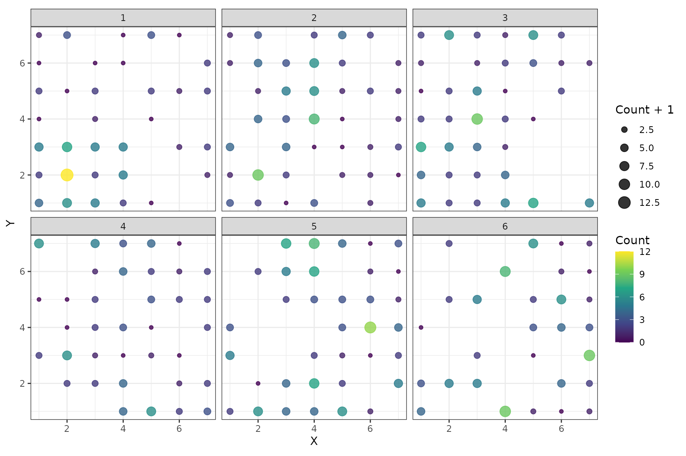
Changing spatial coverage in the simulated tinyVAST example.
Fit and diagnose
The structural-equation strings match the official
tinyVAST notation: one persistent spatial variance, plus an
AR(1) spatiotemporal process.
tiny_mesh <- fmesher::fm_mesh_2d(
tiny_data[c("x", "ycoord")],
cutoff = 1
)
space_term <- "
density <-> density, spatial_sd
"
spacetime_term <- "
density -> density, 1, rho
density <-> density, 0, spatiotemporal_sd
"
tiny_model <- tinyVAST::tinyVAST(
count ~ factor(time),
data = tiny_data,
family = list(poisson = poisson()),
spatial_domain = tiny_mesh,
space_term = space_term,
spacetime_term = spacetime_term,
space_columns = c("x", "ycoord")
)
tiny_diagnostic <- influ(
tiny_model,
focus = "time",
ndraws = 100,
seed = 12
)
summary(tiny_diagnostic)
#> Influence diagnostic summary
#> Backend: tinyVAST
#> Family: single poisson (log)
#> Focus: time
#>
#> term component maximum_absolute_link_influence
#> factor(time) conditional 0.24617106
#> spatiotemporal_field conditional:latent_fields 0.04752798
#> spatial_field conditional:latent_fields 0.02584581
#> level_at_maximum
#> 5
#> 6
#> 6
plot(tiny_diagnostic, type = "components")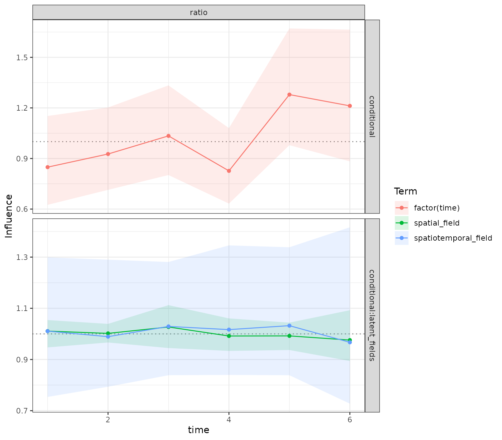
Fixed, spatial, and spatiotemporal influence components from the tinyVAST model.
Fitted field surfaces
tinyVAST::project() exposes the same latent components
used by the adapter. The combined map below is calculated on the link
scale before applying the inverse link.
tiny_mapping_grid <- subset(tiny_grid, time %in% c(1, 3, 6))
tiny_mapping_grid$spatial <- tinyVAST::project(
tiny_model,
extra_times = numeric(0),
newdata = tiny_mapping_grid,
what = "pomega1_g",
future_var = FALSE,
past_var = FALSE,
parm_var = FALSE
)
tiny_mapping_grid$spatiotemporal <- tinyVAST::project(
tiny_model,
extra_times = numeric(0),
newdata = tiny_mapping_grid,
what = "pepsilon1_g",
future_var = FALSE,
past_var = FALSE,
parm_var = FALSE
)
tiny_mapping_grid$combined <-
tiny_mapping_grid$spatial + tiny_mapping_grid$spatiotemporal
tiny_surfaces <- tidyr::pivot_longer(
tiny_mapping_grid,
cols = c(spatial, spatiotemporal, combined),
names_to = "component",
values_to = "link_contribution"
)
tiny_surfaces$component <- factor(
tiny_surfaces$component,
levels = c("spatial", "spatiotemporal", "combined"),
labels = c("Persistent spatial", "Spatiotemporal", "Combined fields")
)
ggplot(tiny_surfaces, aes(x, ycoord, fill = link_contribution)) +
geom_raster() +
coord_equal() +
facet_grid(component ~ time) +
scale_fill_gradient2(
low = "#2166AC", mid = "white", high = "#B2182B", midpoint = 0
) +
labs(x = "X", y = "Y", fill = "Link-scale\ncontribution")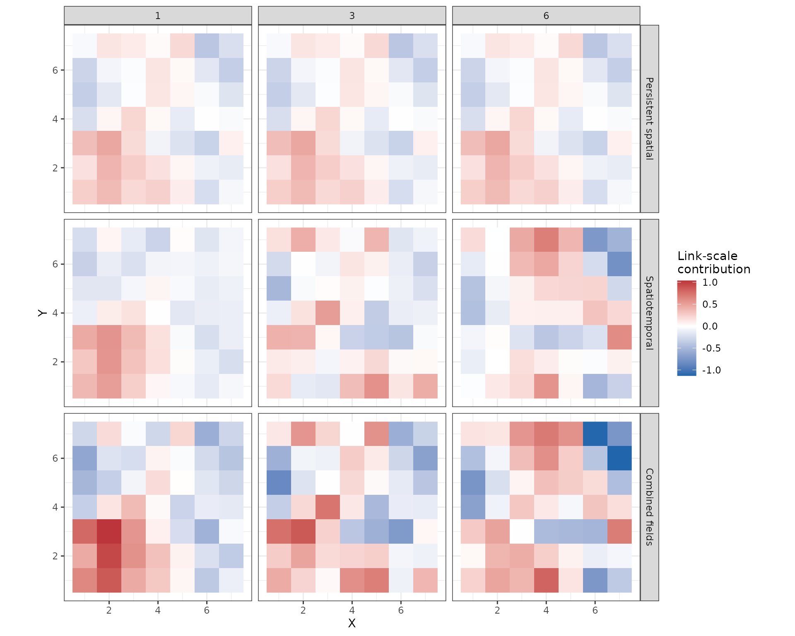
Fitted persistent spatial field, spatiotemporal field, and their sum from the tinyVAST example.
Refitted year-effect steps
The small simulated example already has a fixed
factor(time) term, so it can be used directly for an
executed refitting sequence. tinyVAST controls its fields
through structural-equation strings. Set a field argument to
NULL to disable that field. An empty string instead
requests a variance field, so it is not a field-off setting. The final
step uses the persistent spatial and AR(1) spatiotemporal strings
defined above. The observation data and spatial mesh stay the same
throughout, and factor(time) is retained in every step.
tiny_steps <- influ_steps(
tiny_model,
year = "time",
component = "conditional",
refit = TRUE,
steps = list(
"Year only" = list(
formula = ~factor(time),
space_term = NULL,
spacetime_term = NULL
),
"Add spatial field" = list(
formula = ~factor(time),
space_term = space_term,
spacetime_term = NULL
),
"Add spatiotemporal field" = list(
formula = ~factor(time),
space_term = space_term,
spacetime_term = spacetime_term
)
),
ndraws = 100,
seed = 13
)
tiny_steps
#> <influ_steps>
#> Estimand: year-effect contrasts (not spatial abundance)
#> Focus: time
#> Steps: 3
#> Refitted: 2
#> step_id label backend status
#> 1 Year only tinyVAST refitted
#> 2 Add spatial field tinyVAST refitted
#> 3 Add spatiotemporal field tinyVAST reused original
plot_step(tiny_steps)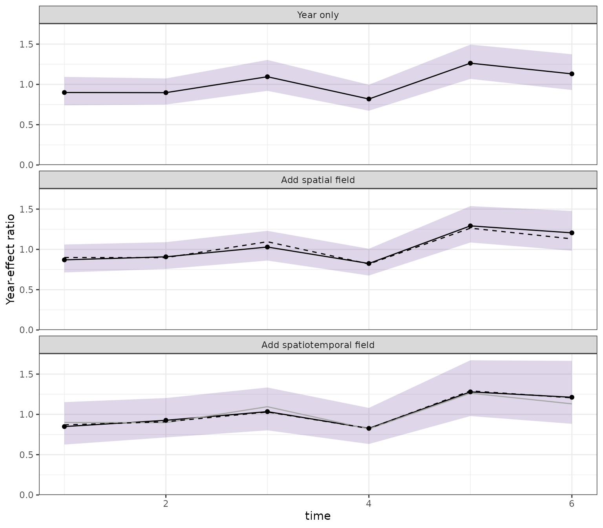
Relative year-effect contrasts from refitted tinyVAST models with year only, a persistent spatial field, and both spatial and spatiotemporal fields. Shading shows the current model’s 95% interval; these are not spatially integrated abundance indices.
This sequence compares the estimated year effects from models fitted with their own coefficients and field parameters. The final step can reuse the original fit when its specification is unchanged. The comparison is order-dependent: adding the spatiotemporal field before the persistent field would pose a different comparison. The intervals describe each fitted year effect, not the difference between consecutive models. The fitted-field surfaces and component-influence plots above provide complementary information about the model structure; they are separate from this refitted comparison.
plot(tiny_steps) reuses the stored results. For larger
spatial models, a named list of previously fitted models can be passed
to influ_steps() instead, so the same comparison can be
produced without fitting them again. Keep the response, observations,
year levels, component, and reference distribution consistent across
that list. Set keep_fits = TRUE if the intermediate fitted
objects are needed afterwards; otherwise the step result retains compact
diagnostic summaries.
Residual conditioning
The following checks reuse the fitted models above. They do not refit models, run MCMC, or change an index. They ask what varies when we simulate a new response: only observation variation, or latent processes as well?
sdmTMB: three different questions
"fitted" holds estimated latent effects fixed.
"conditional_draw" holds fixed parameters at their
estimates, takes one joint approximate conditional draw of
all latent effects, and shares it across every
simulation batch. "new_effects" instead generates new
processes at fitted distribution parameters, following native
re_form = NA (fitted smooths remain fixed). These are
diagnostic targets, not competing estimates of the CPUE index.
pcod_residuals <- lapply(
c("fitted", "conditional_draw", "new_effects"),
function(scheme) influ_residuals(
pcod_model, nsim = 250, batch_size = 25, seed = 41,
conditioning = scheme
)
)
names(pcod_residuals) <- c("fitted", "conditional_draw", "new_effects")
patchwork::wrap_plots(
plot(pcod_residuals$fitted, type = "qq") + labs(title = "Fitted effects"),
plot(pcod_residuals$conditional_draw, type = "qq") +
labs(title = "One conditional draw"),
plot(pcod_residuals$new_effects, type = "qq") + labs(title = "New processes"),
nrow = 1
)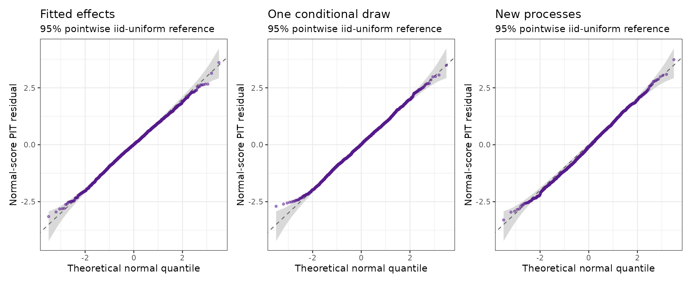
Normal-score PIT Q-Q checks for the same Pacific cod sdmTMB model under three simulation targets: fitted latent effects (left), one shared joint approximate conditional latent draw (centre), and newly simulated processes (right). All use 250 response simulations. These are finite-simulation ranks, not the native analytic quantile residuals. The grey bands are pointwise independent-uniform references, not calibrated tests for this fitted spatial model. Different appearances do not rank these conditioning schemes or identify the best model.
The sdmTMB
residual documentation recommends the approximate conditional-draw
approach over fitted latent modes for goodness-of-fit checks (Waagepetersen
2006; Thygesen et al. 2017).
influ2 uses that latent-draw construction with simulated-response ranks.
Its existing default remains "fitted" so this addition does
not silently change previous results. Neither sampling nor the
qnorm(PIT) transformation makes these fitted-data checks
universally calibrated. Inspect sensitivity to a preselected set of
seeds; do not keep only the most favourable draw.
plot(pcod_residuals$conditional_draw)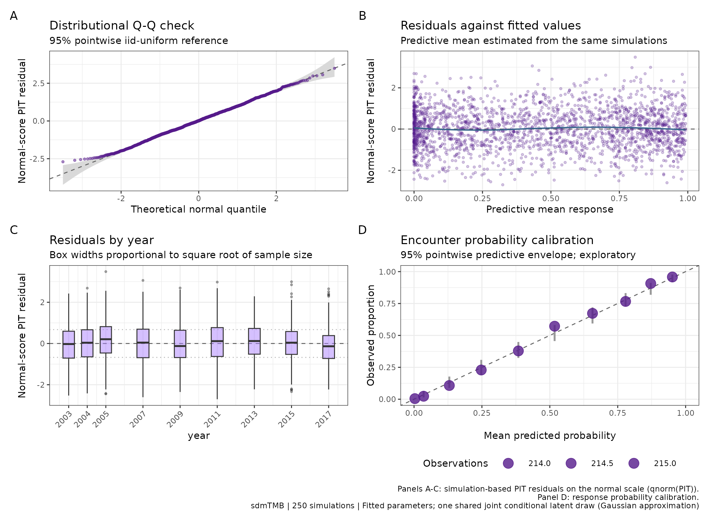
Four-panel Pacific cod residual overview conditional on one shared joint latent-effect draw, with fixed parameters at their fitted values. Panels A-C use normal-score PIT ranks; panel D checks encounter calibration. The binning probabilities use the same sampled latent predictor, and the predictive means come from the same response simulations. Year box widths are proportional to the square root of observation count. Grey references and predictive bars remain exploratory, not confidence intervals around observed proportions or calibrated spatial goodness-of-fit tests.
The complete latent vector is drawn once, not once per location,
year, or response batch. The new schemes prepare their response seeds
once too, so changing batch_size does not change their
observation-level ranks, means, or calibration summaries. The compact
response-ECDF grid can still differ because its range uses the first
batch. The result retains neither the latent draw nor the full response
matrix, although native sparse factorisation and model setup still
require working memory.
For a joint delta model, component = "combined" retains
the full response; "encounter" checks presence, and
supported sdmTMB "positive" checks native component-2
simulations at the original positive-response rows. All three routes
honour the requested conditioning. They are not interchangeable views of
a positive-only diagnostic.
tinyVAST: match the target, not the argument name
The same two conditional choices work for the simulated spatial and AR(1) spatiotemporal model above:
tiny_fitted_checks <- influ_residuals(
tiny_model, nsim = 250, seed = 41, conditioning = "fitted"
)
tiny_draw_checks <- influ_residuals(
tiny_model, nsim = 250, seed = 41, conditioning = "conditional_draw"
)
patchwork::wrap_plots(
plot(tiny_fitted_checks, type = "qq") + labs(title = "Fitted effects"),
plot(tiny_draw_checks, type = "qq") + labs(title = "One conditional draw"),
nrow = 1
)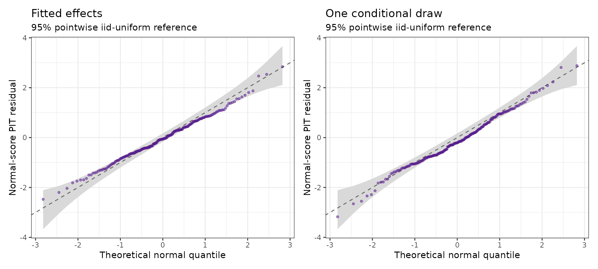
Normal-score PIT Q-Q checks for the same simulated tinyVAST model with persistent spatial and AR(1) spatiotemporal fields. The left plot fixes fitted latent effects; the right holds one joint approximate conditional latent draw across all 250 response simulations. The grey bands are independent-uniform references only. This comparison changes the simulation target, not the model, and does not establish which scheme is best calibrated.
Native tinyVAST simulate(type = "mle-mvn") draws a new
latent vector for each replicate. influ2’s
"conditional_draw" instead prepares one native TMB draw and
reuses it. The common target is therefore intentional, not inferred from
a shared native argument name. Unconditional "new_effects"
is not offered for tinyVAST here; unsupported choices fail explicitly.
See Residual
diagnostics for the full backend support table, including glmmTMB
and brms.
These plots do not replace maps of residuals, temporal-dependence checks, validation of field covariance assumptions, or out-of-sample assessment.
Response indices and area totals
The influence and step plots above answer different questions from a
standardised expected-response index or an area total. Both new
calculations work with sdmTMB and tinyVAST, using the same
influ_index assessment table as GLMs, GAMs, glmmTMB, and
brms. No refitting is required.
sdmTMB: a common domain across years
qcs_grid is the package’s 2 × 2 km prediction grid. We
hold its locations and depth covariates constant across years. The model
above is binomial, so its standardised response is a mean
encounter probability, not catch density. Its
area-integrated response is expected encounter-weighted area, not
biomass or an estimate of the number of fish.
pcod_response <- cpue_index(pcod_model, year = "year",
reference_data = qcs_grid, uncertainty = "none", batch_size = 2000,
units = "encounter probability")
pcod_area <- integrate_index(pcod_model, qcs_grid, area = 4, year = "year",
area_units = "km^2", response_units = "encounter probability",
units = "km^2",
ndraws = 100, batch_size = 2000, draw_batch_size = 25, seed = 71)
knitr::kable(as.data.frame(pcod_area), digits = 3)| Year | Mean | Median | SD | CV | Qlower | Qupper | Method | Distribution | Link |
|---|---|---|---|---|---|---|---|---|---|
| 2003 | 13197.70 | NA | 567.760 | 0.043 | 12120.191 | 14445.29 | integrated | binomial | logit |
| 2004 | 14240.84 | NA | 659.981 | 0.046 | 12871.285 | 15321.37 | integrated | binomial | logit |
| 2005 | 14162.44 | NA | 655.869 | 0.046 | 12842.750 | 15305.50 | integrated | binomial | logit |
| 2007 | 11457.21 | NA | 570.477 | 0.050 | 10481.084 | 12714.38 | integrated | binomial | logit |
| 2009 | 12522.68 | NA | 624.629 | 0.050 | 11186.418 | 13563.70 | integrated | binomial | logit |
| 2011 | 11371.78 | NA | 657.900 | 0.058 | 10314.141 | 12918.96 | integrated | binomial | logit |
| 2013 | 14951.32 | NA | 663.933 | 0.044 | 13659.403 | 15994.24 | integrated | binomial | logit |
| 2015 | 13845.19 | NA | 541.865 | 0.039 | 12804.742 | 14717.81 | integrated | binomial | logit |
| 2017 | 11090.37 | NA | 715.216 | 0.064 | 9859.464 | 12518.32 | integrated | binomial | logit |
plot_index(pcod_area)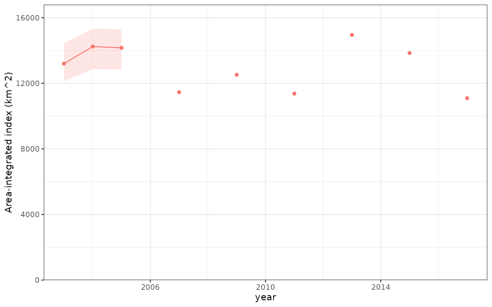
Pacific cod encounter-weighted area over the fixed Queen Charlotte Sound grid. Each cell contributes its 4 km² area times its fitted encounter probability, including persistent and spatiotemporal fields. The pointwise 95% intervals propagate joint Gaussian parameter and field uncertainty; this is not a biomass index or a Laplace bias-corrected estimate.
For a native density model, exactly the same call integrates the
combined expected density, including zero and positive components of a
delta model. The response and area units must be compatible. sdmTMB
group-level IID effects are set to zero, while the fitted spatial fields
are included by default. prediction_offset = "log_exposure"
can supply an explicit link-scale offset column; the default prediction
offset is zero (unit exposure for a log offset).
tinyVAST: integrating the simulated field
For this simulation, interpret each grid location as a 1 km² cell and its Poisson mean as expected fish per km². That is an explicit simulation convention, not a general conversion from raw fishery counts to density. The total covers the same 49 cells each year, irrespective of which cells were sampled.
tiny_reference <- unique(tiny_grid[c("x", "ycoord", "var", "dist")])
tiny_response <- cpue_index(tiny_model, year = "time",
reference_data = tiny_reference, units = "fish/km^2",
ndraws = 200, seed = 72)
tiny_total <- integrate_index(tiny_model, tiny_reference, area = 1, year = "time",
area_units = "km^2", response_units = "fish/km^2", units = "fish",
ndraws = 200, seed = 72)
knitr::kable(as.data.frame(tiny_total), digits = 3)| Year | Mean | Median | SD | CV | Qlower | Qupper | Method | Distribution | Link |
|---|---|---|---|---|---|---|---|---|---|
| 1 | 109.670 | NA | 19.135 | 0.174 | 85.783 | 146.663 | integrated | poisson | log |
| 2 | 118.864 | NA | 17.385 | 0.146 | 96.511 | 161.823 | integrated | poisson | log |
| 3 | 134.286 | NA | 16.937 | 0.126 | 115.763 | 179.299 | integrated | poisson | log |
| 4 | 107.701 | NA | 19.737 | 0.183 | 88.813 | 149.476 | integrated | poisson | log |
| 5 | 165.391 | NA | 30.589 | 0.185 | 139.547 | 251.454 | integrated | poisson | log |
| 6 | 157.522 | NA | 35.687 | 0.227 | 133.311 | 219.209 | integrated | poisson | log |
plot_index(tiny_total)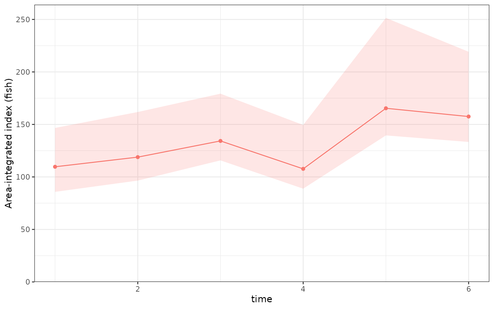
Expected fish over the fixed 49 km² simulated domain, including the fitted tinyVAST persistent and AR(1) spatiotemporal fields. Pointwise 95% intervals use shared joint Gaussian parameter/field draws. These are plug-in expected-response totals, not Laplace bias-corrected totals or predictive intervals for new counts.
spatial_fields = "all" is the default.
"spatial" excludes the spatiotemporal field;
"spatiotemporal" excludes persistent and spatially varying
fields; "none" excludes both kinds. Those alternatives
change the prediction target without refitting, and are
not the refitted step sequence above. Other fitted time effects and
smooths remain present.
Spatial uncertainty uses a joint Gaussian approximation to the fitted
parameters and fields. Every cell and year uses the same parameter-draw
identities. Predictions are reduced directly to annual summaries in
blocks; retain = "draws" retains only a draw-by-year
matrix. Native model calculations can allocate additional memory.
Increase ndraws and check numerical stability for final
inference; the small simulation counts here keep documentation builds
manageable. Native sdmTMB and tinyVAST bias-corrected index routines
answer a different numerical approximation and should not be expected to
match these uncorrected point estimates.
See CPUE indices for area integration with a GAM spatial smooth or an ordinary GLM, unit and catchability safeguards, and seasonal averaging weights. The same fixed-domain interface applies even when the fitted model has no spatial terms. Multivariate tinyVAST influence diagnostics below remain supported, but their response integration is explicitly rejected until separate response/unit targets exist.
Sampling support and index-domain counterfactuals
index_domain() separates three questions: how much
reference weight is sampled, which native terms contribute on the link
scale, and how the annual index changes under an explicitly defined
prediction counterfactual. It never refits the model. These contrasts
are therefore different from the refitted influ_steps()
comparisons above.
Prefer an explicit sampling rule: shared cell IDs, a
coordinate/distance rule, or a reference-cell-by-year logical matrix. If
sampled is omitted, the default uses half the
reference-grid spacing and issues a warning. That convenience rule is
not an inferred survey footprint: a mesh boundary or the presence of
prediction covariates is not evidence of sampling. Here, 5
km is a deliberately chosen support radius around Pacific cod
observations, not an inferred survey footprint. The units match the
projected X and Y coordinates; a different
scientifically justified radius answers a different question.
sdmTMB: a small, explicit reference profile
These calculations reuse pcod_model; there is no
additional fit. To keep the worked example fast, select 40 grid
locations spread across the ordered survey grid, and use 60 shared joint
Gaussian draws with seed 73. Every selected cell has equal reference
weight. This deliberately small reference profile is
neither the full Queen Charlotte Sound grid nor an area/biomass
estimate. The model response remains encounter probability.
pcod_domain_reference <- qcs_grid[order(qcs_grid$X, qcs_grid$Y), ]
profile_rows <- unique(round(seq(
1, nrow(pcod_domain_reference), length.out = 40
)))
pcod_domain_reference <- pcod_domain_reference[profile_rows, ]
pcod_domain <- index_domain(
pcod_model, reference_data = pcod_domain_reference, year = "year",
sampled = list(coords = c("X", "Y"), distance = 5),
sampled_definition = c("cell_time", "cell_ever"),
omission_definition = "cell_time",
min_obs = 1, min_years = 1,
omit = "spatial", where = "unsampled", units = "encounter probability",
ndraws = 60, seed = 73, batch_size = 500, draw_batch_size = 20,
retain_cells = sort(unique(pcod$year))[1]
)
knitr::kable(summary(pcod_domain, what = "coverage"), digits = 3)| Year | class | cells | weight | share |
|---|---|---|---|---|
| 2003 | sampled | 19 | 19 | 0.475 |
| 2003 | previously_sampled | 19 | 19 | 0.475 |
| 2003 | never_sampled | 2 | 2 | 0.050 |
| 2004 | sampled | 20 | 20 | 0.500 |
| 2004 | previously_sampled | 18 | 18 | 0.450 |
| 2004 | never_sampled | 2 | 2 | 0.050 |
| 2005 | sampled | 16 | 16 | 0.400 |
| 2005 | previously_sampled | 22 | 22 | 0.550 |
| 2005 | never_sampled | 2 | 2 | 0.050 |
| 2007 | sampled | 20 | 20 | 0.500 |
| 2007 | previously_sampled | 18 | 18 | 0.450 |
| 2007 | never_sampled | 2 | 2 | 0.050 |
| 2009 | sampled | 20 | 20 | 0.500 |
| 2009 | previously_sampled | 18 | 18 | 0.450 |
| 2009 | never_sampled | 2 | 2 | 0.050 |
| 2011 | sampled | 21 | 21 | 0.525 |
| 2011 | previously_sampled | 17 | 17 | 0.425 |
| 2011 | never_sampled | 2 | 2 | 0.050 |
| 2013 | sampled | 18 | 18 | 0.450 |
| 2013 | previously_sampled | 20 | 20 | 0.500 |
| 2013 | never_sampled | 2 | 2 | 0.050 |
| 2015 | sampled | 15 | 15 | 0.375 |
| 2015 | previously_sampled | 23 | 23 | 0.575 |
| 2015 | never_sampled | 2 | 2 | 0.050 |
| 2017 | sampled | 20 | 20 | 0.500 |
| 2017 | previously_sampled | 18 | 18 | 0.450 |
| 2017 | never_sampled | 2 | 2 | 0.050 |
At this radius, some profile cells were never observed and no profile
cell was sampled in every survey year. We therefore request
cell_time and cell_ever comparisons, rather
than an empty cell_always series. Requesting that empty
core returns undefined means and a warning; the default plot also warns
when an entirely unavailable series is excluded from display
normalisation. It does not replace an empty mean by zero or suppress
other diagnostics.
plot(pcod_domain)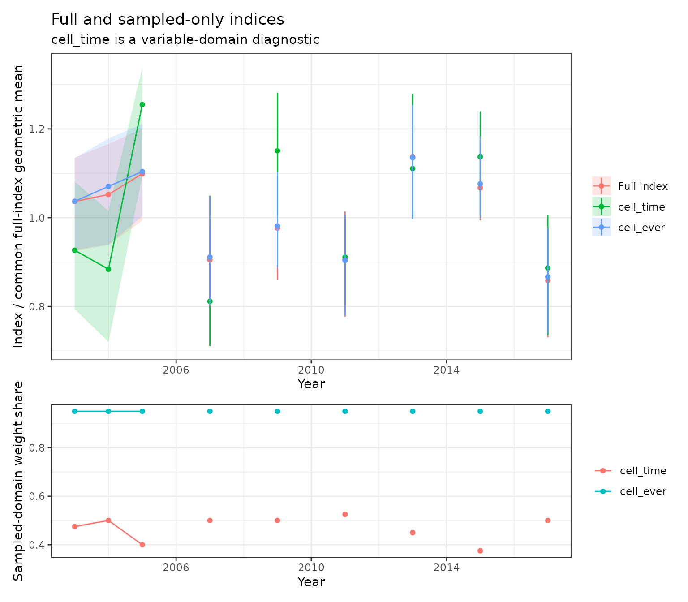
Pacific cod encounter probabilities over a fixed 40-cell demonstration reference profile. The upper panel compares the full-profile mean with sampled-only means, using one shared full-index display divisor; pointwise 95% intervals use 60 paired joint Gaussian draws. The lower panel shows the declared 5 km observation-support coverage, not sampling uncertainty. The annually sampled cell_time series is a variable-domain diagnostic, not an alternative fixed-domain abundance index.
patchwork::wrap_plots(
plot(pcod_domain, type = "partition"),
plot(pcod_domain, type = "share"),
ncol = 1
)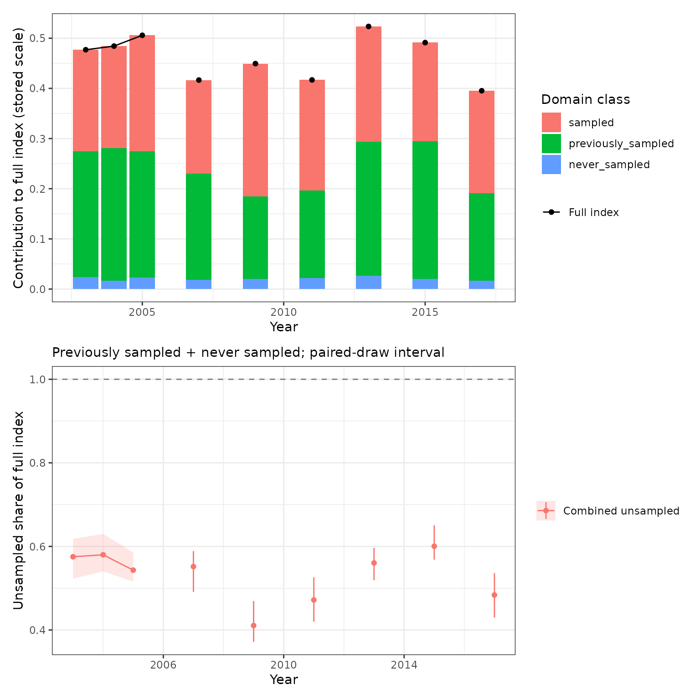
Pacific cod response contributions and dependence on unsampled reference cells. The stacked contributions in the upper panel sum to the black full-profile encounter-probability mean. The lower panel combines previously sampled and never-sampled cells as a share of that full mean, with a pointwise paired-draw interval. Previously sampled means sampled in another survey year, not necessarily an earlier year; unsampled does not mean uninformed by the spatial model.
plot(pcod_domain, type = "omission")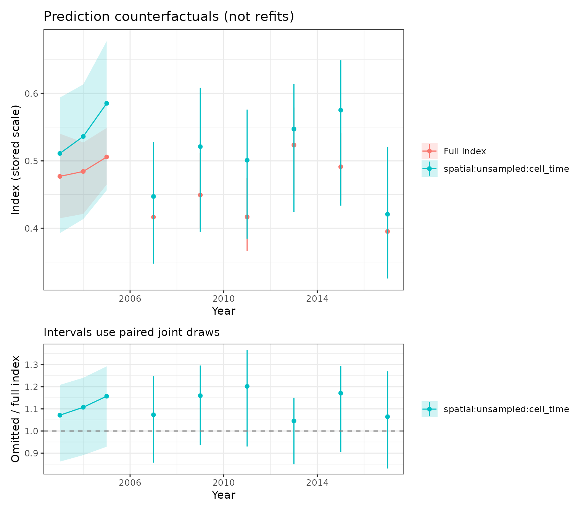
Pacific cod prediction counterfactual setting the persistent spatial field to zero only in cells without an observation within 5 km that year. The fitted parameters, sampled-cell predictions, and spatiotemporal field are retained. The lower panel compares counterfactual and full indices using the same 60 joint draws. This is sensitivity to a prediction intervention, not a refitted model or evidence that the unsampled predictions are incorrect.
cell_time restricts predictions to that year’s sampled
cells and can change the target population from year to year.
cell_ever retains cells sampled in at least
min_years years (one year by default); a proportion
strictly between zero and one is converted to a year count by rounding
up. cell_always requires sampling in every requested year,
independently of min_years. A fixed domain can still be
small or unrepresentative. Empty restricted means are undefined, not
zero. Coverage is a deterministic description of the declared rule, not
a confidence interval or proof of representative sampling. All three
sampled-only indices are calculated by default; omission uses the single
omission_definition, which defaults to
"cell_time". Choosing a different omission definition does
not change the coverage reporting classes.
For weighted means, the sampled-only plot divides all series by the
same full-index geometric mean over common positive years. For area
totals, each series is instead divided by its own geometric mean over
that common period: the comparison then shows trend shapes rather than
different domain areas. Stored values are unchanged. The
cell_time series is explicitly labelled as a
variable-domain diagnostic. Coverage and response partitions are stacked
by class; response partitions sum to the overlaid full index. The share
plot combines previously sampled and never sampled cells, with intervals
from paired joint draws. Omission plots add a lower omitted/full ratio
panel. Link contributions instead add separately within each native
component, not on the response scale. Their
decomposition quantiles describe spatial variation across weighted
reference cells, not confidence intervals.
omit = "spatial" sets both the persistent spatial field
and all spatially varying coefficient (SVC) fields to zero, matching
spatial_fields = "spatiotemporal" in
cpue_index(). Use "svc" to remove only SVC
fields, or "spatiotemporal" to remove only the time-varying
field. Nothing is re-estimated. Year omission substitutes the first
year’s contribution at the same reference location. By default a
covariate contribution is replaced by its reference-weighted mean over
that year’s sampled cells, separately for each joint draw and component.
This is not prediction at a mean raw covariate or a mean response;
choose "zero" only for deliberately centred terms, or
supply an explicit fixed-value rule. Pacific cod predictions above
remain encounter probabilities, not biomass.
tinyVAST: changing observation support on the simulated grid
The tinyVAST simulation has exact shared cell coordinates. A
zero-distance rule therefore identifies observations at the same cell
without rounding or nearest-neighbour assignment. The 49 cells carry
equal reference weights, as in the previous expected-density example; no
area multiplication is requested here. Every cell was observed in at
least one of the six simulated years, so the never-sampled contribution
is genuinely zero in this example, while same-year coverage changes.
This calculation reuses tiny_model, with only 60 joint
draws and seed 74, and retains first-year cell contributions for a
map.
tiny_domain_reference <- unique(tiny_grid[c("x", "ycoord", "var", "dist")])
tiny_domain <- index_domain(
tiny_model, reference_data = tiny_domain_reference, year = "time",
sampled = list(coords = c("x", "ycoord"), distance = 0),
omission_definition = "cell_time",
min_years = 1,
omit = "spatiotemporal", where = "unsampled", units = "fish/km^2",
ndraws = 60, seed = 74, batch_size = 500, draw_batch_size = 20,
retain_cells = 1
)
knitr::kable(summary(tiny_domain, what = "trend"), digits = 3)| series | window | slope | slope_lower | slope_upper | slope_difference | difference_lower | difference_upper | correlation | correlation_lower | correlation_upper |
|---|---|---|---|---|---|---|---|---|---|---|
| full | all | 0.074 | 0.016 | 0.134 | 0.000 | 0.000 | 0.000 | 1.000 | 1.000 | 1.000 |
| cell_time | all | 0.054 | 0.007 | 0.111 | -0.019 | -0.043 | 0.011 | 0.963 | 0.788 | 0.992 |
| cell_ever | all | 0.074 | 0.016 | 0.134 | 0.000 | 0.000 | 0.000 | 1.000 | 1.000 | 1.000 |
| cell_always | all | 0.083 | 0.024 | 0.161 | 0.009 | -0.032 | 0.068 | 0.982 | 0.657 | 0.993 |
| unsampled_only | all | 0.116 | -0.019 | 0.199 | 0.042 | -0.043 | 0.090 | 0.877 | 0.301 | 0.972 |
| spatiotemporal:unsampled:cell_time | all | 0.065 | 0.015 | 0.131 | -0.009 | -0.045 | 0.046 | 0.993 | 0.746 | 0.998 |
plot(tiny_domain)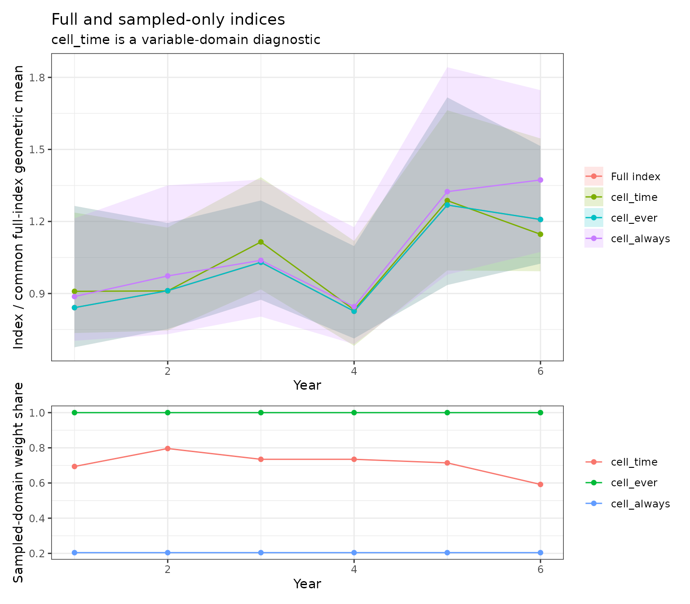
Full and sampled-only expected-density means from the same tinyVAST fit over the 49-cell simulated grid, with declared observation coverage below. The pointwise intervals use 60 shared joint Gaussian draws, not repeated fits. The fixed ever-sampled domain equals the full grid, whereas the same-year domain changes and the always-sampled core contains fewer cells. This display preserves level differences by using the same full-index divisor for all means.
The next display uses the stored decomposition table rather than predicting again. Its ribbons describe the distribution of native link contributions across cells, not parameter-uncertainty intervals. The fields are additive on the link scale; exponentiating each field and adding those numbers would not reconstruct the response mean.
tiny_field_terms <- subset(
summary(tiny_domain, what = "decomposition"),
class == "all" & term %in% c("spatial", "spatiotemporal")
)
ggplot(tiny_field_terms, aes(as.numeric(Year), mean)) +
geom_ribbon(aes(ymin = Q10, ymax = Q90), fill = "#8E7CC3", alpha = 0.25) +
geom_line(colour = "#674EA7") +
geom_hline(yintercept = 0, linetype = 2, colour = "grey50") +
facet_wrap(~term) +
labs(x = "Year", y = "Link-scale contribution")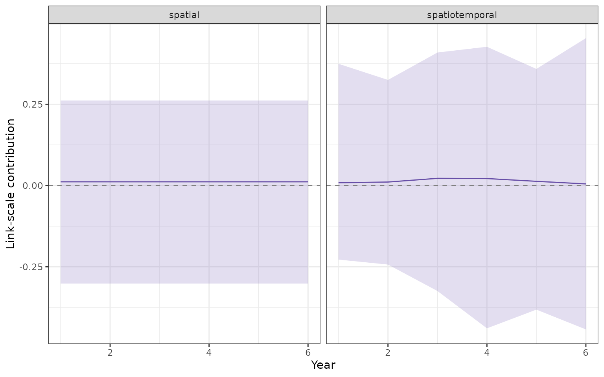
Native tinyVAST persistent and spatiotemporal link contributions across all reference cells. Lines show reference-weighted means and ribbons show spatial Q10-Q90 ranges from the recorded weighted-histogram approximation. These ranges describe spatial heterogeneity, not uncertainty in fitted coefficients or a confidence interval for an index.
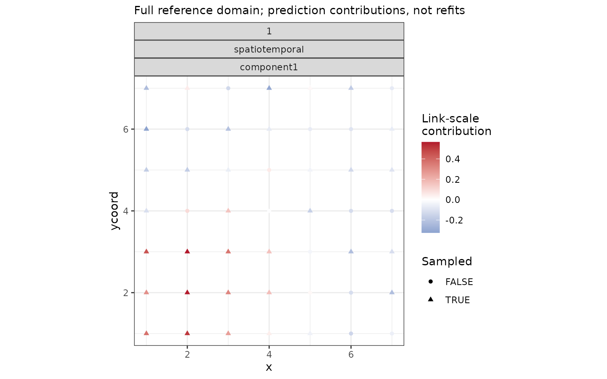
First-year tinyVAST spatiotemporal link contribution at each of the 49 reference cells. The displayed field is retained from the same fitted model and is not independently estimated from sampled-only data. Unsampled cells can still borrow information through the fitted covariance structure.
For an index-only counterfactual, the same omission rules are
available through cpue_index(). This returns an ordinary
influ_index, without the coverage, partition, and
decomposition report:
pcod_without_unsampled_spatial <- cpue_index(
pcod_model, reference_data = pcod_domain_reference, year = "year",
omit_terms = "spatial", omit_where = "unsampled",
sampled = list(coords = c("X", "Y"), distance = 5),
sampled_definition = "cell_time", ndraws = 60, seed = 73
)
knitr::kable(index_table(pcod_without_unsampled_spatial), digits = 3)| Year | Mean | SD | CV | Q0.025 | Q0.975 | Method | Distribution | Link |
|---|---|---|---|---|---|---|---|---|
| 2003 | 0.511 | 0.052 | 0.102 | 0.393 | 0.594 | standardised | binomial | logit |
| 2004 | 0.536 | 0.055 | 0.102 | 0.414 | 0.613 | standardised | binomial | logit |
| 2005 | 0.585 | 0.061 | 0.105 | 0.456 | 0.678 | standardised | binomial | logit |
| 2007 | 0.447 | 0.052 | 0.116 | 0.348 | 0.528 | standardised | binomial | logit |
| 2009 | 0.521 | 0.054 | 0.103 | 0.395 | 0.608 | standardised | binomial | logit |
| 2011 | 0.501 | 0.056 | 0.113 | 0.384 | 0.576 | standardised | binomial | logit |
| 2013 | 0.547 | 0.055 | 0.101 | 0.424 | 0.614 | standardised | binomial | logit |
| 2015 | 0.575 | 0.059 | 0.102 | 0.434 | 0.649 | standardised | binomial | logit |
| 2017 | 0.421 | 0.053 | 0.127 | 0.325 | 0.521 | standardised | binomial | logit |
stopifnot(isTRUE(all.equal(
pcod_without_unsampled_spatial$table$Mean,
pcod_domain$omission[[1]]$table$Mean
)))Area totals can be requested with area,
area_units, and response_units, using the same
unit conventions as integrate_index(). A sampled-domain
total is over less area than the full total, so a level difference is
not automatically a model failure. Trend and omission summaries use
paired joint draws from one fit, not independent uncertainty from
separate models.
GAM: declared spatial and spatiotemporal smooths
The same workflow is available for single-predictor
mgcv::gam() models. A smooth is not automatically labelled
a field: supply its native smooth label in
spatial_terms or spatiotemporal_terms, or use
that label directly in omit. This makes the scientific
grouping explicit, including for tensor products, by-factor smooths, and
random-effect smooths.
This example simulates CPUE on a 36-cell reference lattice over five years. Sampling moves eastward, leaving a permanently unobserved northern strip and holes within the sampled footprint. The Gamma model is fitted to positive CPUE observations, not to a density calibrated to biomass. Its fitted smooths borrow information into unobserved cells; no diagnostic can establish the truth of that extrapolation from these observations alone.
set.seed(75)
gam_reference <- expand.grid(X = seq(0, 1, length.out = 6),
Y = seq(0, 1, length.out = 6))
gam_reference$cell <- seq_len(nrow(gam_reference))
# Depth is not a deterministic copy of the spatial coordinates: otherwise
# cancelling one of two confounded smooths is a poor demonstration target.
gam_reference$depth <- runif(nrow(gam_reference), 20, 80)
gam_population <- merge(gam_reference,
expand.grid(year = 2011:2015, replicate = 1:3))
time_fraction <- (gam_population$year - 2011) / 4
eta <- 0.2 + 0.15 * (gam_population$year - 2011) -
0.015 * gam_population$depth + sin(pi * gam_population$X) +
0.7 * (2 * time_fraction - 1) * (gam_population$X - 0.5)
gam_population$cpue <- rgamma(nrow(gam_population),
shape = 5, scale = exp(eta) / 5)
sample_probability <- 0.25 + 0.65 *
(1 - abs(gam_population$X - time_fraction))
observed <- gam_population$Y < 1 &
runif(nrow(gam_population)) < sample_probability
gam_observations <- gam_population[observed, ]
gam_model <- mgcv::gam(
cpue ~ factor(year) + s(depth, k = 5) + s(X, Y, k = 10) +
ti(X, Y, year, d = c(2, 1), k = c(8, 3)),
family = Gamma(link = "log"), data = gam_observations, method = "REML"
)
vapply(gam_model$smooth, function(x) x$label, character(1))
#> [1] "s(depth)" "s(X,Y)" "ti(X,Y,year)"data supplies the original cell identifiers, which are
not formula predictors. They are checked against the retained fitted
rows and values; the external fitting call is never reevaluated.
Coverage counts only observed responses with positive fitted likelihood
weights and positive trial counts. Rows with missing responses or zero
likelihood weights do not establish sampling support.
gam_domain <- index_domain(
gam_model, reference_data = gam_reference, year = "year",
data = gam_observations, sampled = "cell",
sampled_definition = c("cell_time", "cell_ever"),
spatial_terms = "s(X,Y)",
spatiotemporal_terms = "ti(X,Y,year)",
omit = c("spatial", "spatiotemporal"), where = "unsampled",
ndraws = 60, seed = 76, batch_size = 180, draw_batch_size = 20,
retain_cells = 2015, units = "CPUE"
)
knitr::kable(index_table(gam_domain$baseline), digits = 3)| Year | Mean | SD | CV | Q0.025 | Q0.975 | Method | Distribution | Link |
|---|---|---|---|---|---|---|---|---|
| 2011 | 1.070 | 0.077 | 0.072 | 0.941 | 1.232 | standardised | Gamma | log |
| 2012 | 1.186 | 0.054 | 0.045 | 1.081 | 1.276 | standardised | Gamma | log |
| 2013 | 1.337 | 0.076 | 0.057 | 1.221 | 1.484 | standardised | Gamma | log |
| 2014 | 1.649 | 0.093 | 0.056 | 1.462 | 1.796 | standardised | Gamma | log |
| 2015 | 1.885 | 0.140 | 0.074 | 1.689 | 2.193 | standardised | Gamma | log |
# The fitted full-domain estimate agrees with native response prediction.
native_first_year <- mean(predict(gam_model,
newdata = transform(gam_reference, year = 2011), type = "response"))
stopifnot(isTRUE(all.equal(native_first_year,
gam_domain$baseline$table$Mean[1], check.attributes = FALSE)))Uncertainty uses shared joint Gaussian coefficient draws with native
GAM covariance, including the smoothing-parameter correction when
available. Likelihood nuisance parameters stay fitted. This is not MCMC,
and these simulation intervals need not equal the delta-method intervals
returned by an ordinary GAM cpue_index() call. The plug-in
full-domain point estimate is the same. Predictions are reduced in
blocks; the saved result contains annual draws and summaries, not a
cell-by-draw prediction array or the model.
plot(gam_domain)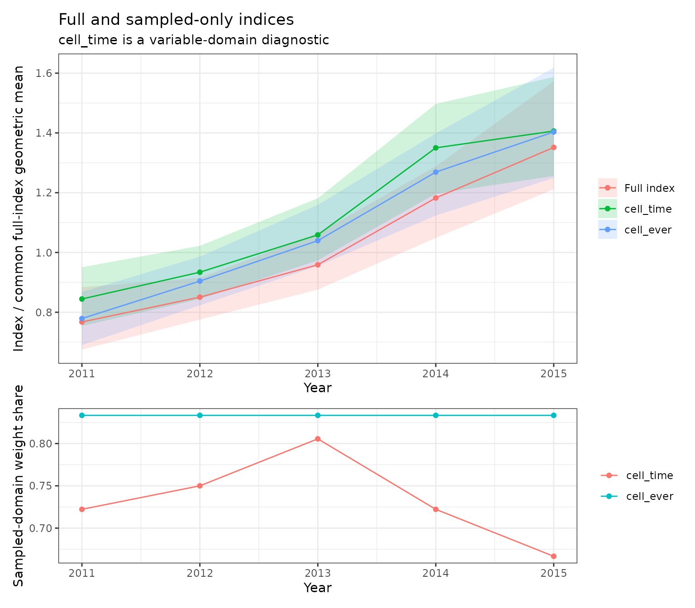
Simulated Gamma CPUE over the fixed 36-cell reference lattice, compared with annually sampled and ever-sampled subsets. The lower panel reports the declared cell-ID coverage. All lines use the same full-index display divisor, and pointwise 95% intervals use 60 paired Gaussian GAM coefficient draws. The annual subset changes the reference population; none of these CPUE means is biomass.
plot(gam_domain, type = "omission")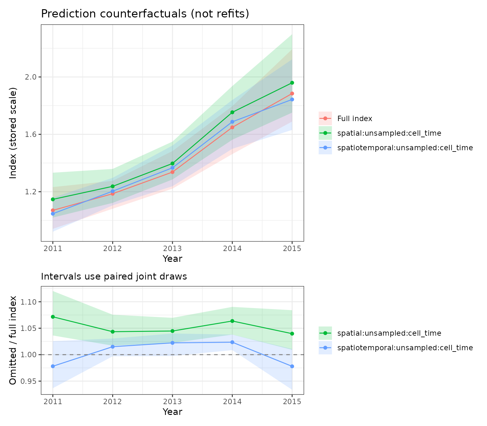
Separate GAM prediction interventions: zero the declared persistent spatial smooth, or zero the declared spatiotemporal tensor smooth, only in unsampled cell-years. Each intervention is compared with the unchanged full prediction using the same joint coefficient draws. Sampled-cell predictions and all other terms remain fitted; these are not reduced-model refits or a test that unsampled predictions are wrong.
The grouped labels spatial and
spatiotemporal are available to the same decomposition and
retained-cell map methods as native spatial models. Smooths not grouped
explicitly, such as s(depth), retain their native labels.
For an index alone,
cpue_index(..., omit_terms = "spatial", data = gam_observations, sampled = "cell", spatial_terms = "s(X,Y)")
uses this same paired calculation, without retaining the domain report.
Multi-predictor GAM families and transformed responses are rejected
rather than assigned an implicit response-scale interpretation.
Multivariate tinyVAST responses
tinyVAST can fit multiple responses, including responses
with different families. influ2 keeps the common schema and
prefixes each component with its response name. This small non-spatial
example isolates that interface; the same response labels are used when
spatial and spatiotemporal terms are added.
multivariate_data <- rbind(
transform(
tiny_data,
response = count,
var = "count",
dist = "poisson"
),
transform(
tiny_data,
response = as.numeric(count > 0),
var = "encounter",
dist = "binomial"
)
)
multivariate_model <- tinyVAST::tinyVAST(
response ~ factor(time),
data = multivariate_data,
family = list(
poisson = poisson(),
binomial = binomial()
),
spatial_domain = NULL
)
multivariate_diagnostic <- influ(
multivariate_model,
focus = "time"
)
unique(multivariate_diagnostic$influence[c("term", "component")])
#> term component
#> 1 factor(time) count:conditional
#> 13 factor(time) encounter:conditionalJoint field uncertainty
The fixed-effect bands use each model’s joint maximum-likelihood covariance. Spatial and spatiotemporal intervals use sparse joint-precision simulation. The implementation processes parameter draws in small batches and retains only focus-by-term diagnostic draws, never an observations-by-draws latent field array. For delta models, occurrence and positive fields are taken from the same joint draw before unconditional-mean influence is calculated. This preserves cross-component dependence while keeping memory use bounded.
uncertainty = "none" remains available as a fast
fitted-mode preview. An explicit reference_data grid,
optionally with reference_weights, can be used to hold the
spatial and covariate standardisation distribution fixed across model
comparisons.
The same reference is used to centre the fitted-effect panel in a CDI plot. For a binomial logit component, as in the Pacific cod example, centred effects remain in log-odds, with zero as the reference. A log-link component, as in the simulated count example, uses relative effects about one on a logarithmic axis. Select the relevant response and component when comparing different fields or mixed-family responses. The fitted field maps above remain on their original link scale; they describe the underlying field, whereas the influence panels describe its contribution relative to the chosen reference distribution.